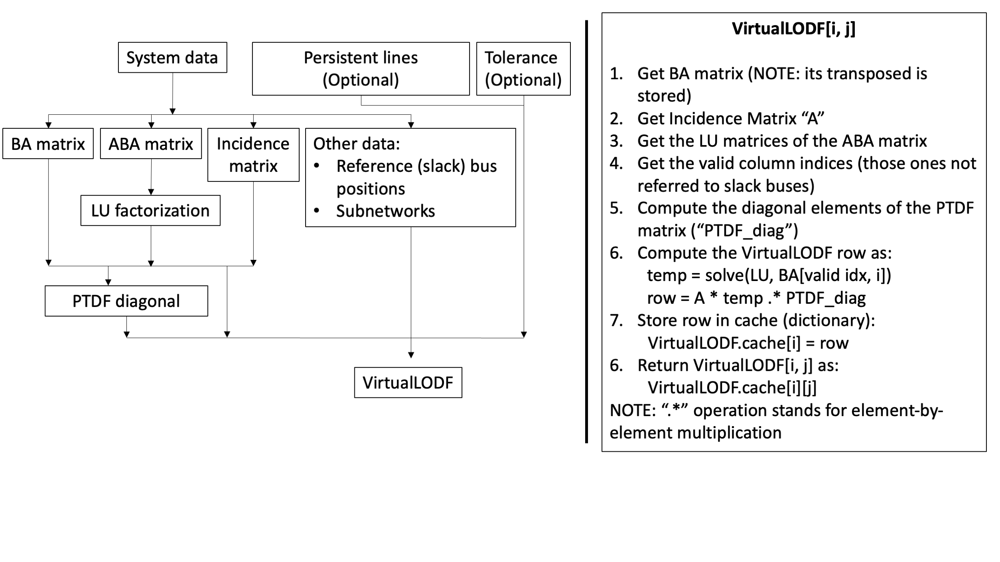

VirtualLODF
The VirtualLODF structure follows the same philosofy as the VirtualPTDF: it contains rows of the original LODF matrix, evaluated and cached on demand.
Refer to the different arguments of the VirtualLODF methods by looking at the "Public API Reference" page.
How the VirtualLODF works
The VirtualLODF structure retains many of the similarities of the VirtualPTDF. However, its computation is more complex and requires some additional data.
Starting from the system data, the IncidenceMatrix, BA_Matrix and ABA_Matrix (with relative LU factorization matrices) are evaluated. The ABA_Matrix and BA_Matrix are used for the computation of the diagonal elements of the PTDF matrix, and this vector is stored in the VirtualLODF structure together with the other structures mentioned above.
Once the VirtualLODF is initialized, each row of the matrix can be evaluated separately and on user request. The algorithmic procedure is the following:
- Define the
VirtualPTDFstructure - Call any element of the matrix to define and store the relative row as well as showing the selected element
Regarding point 2, if the row has been stored previously then the desired element is just loaded from the cache and shown.
The flowchart below shows how the VirtualLODF is structured and how it works. Examples will be presented in the following sections.

Initialize VirtualLODF and compute/access row/element
As for the LODF matrix, at first the System data must be loaded. The "RTS-GMLC" systems is considered as example:
julia> using PowerNetworkMatricesjulia> using PowerSystemCaseBuilderjulia> import PowerNetworkMatrices as PNMjulia> import PowerSystemCaseBuilder as PSBjulia> sys = PSB.build_system(PSB.PSISystems, "RTS_GMLC_DA_sys");┌ Info: Building new system RTS_GMLC_DA_sys from raw data └ sys_descriptor.raw_data = "/home/runner/.julia/artifacts/c257b2c37b981f261fdc328b0fb9b96436a96537/RTS-GMLC-0.2.3" [ Info: Parsing csv data in branch.csv ... [ Info: Successfully parsed branch.csv [ Info: Parsing csv data in bus.csv ... [ Info: Successfully parsed bus.csv [ Info: Parsing csv data in dc_branch.csv ... [ Info: Successfully parsed dc_branch.csv [ Info: Parsing csv data in gen.csv ... [ Info: Successfully parsed gen.csv [ Info: Parsing csv data in reserves.csv ... [ Info: Successfully parsed reserves.csv [ Info: Parsing csv data in simulation_objects.csv ... [ Info: Successfully parsed simulation_objects.csv [ Info: Parsing csv data in storage.csv ... [ Info: Successfully parsed storage.csv [ Info: Parsing csv data in timeseries_pointers.csv ... [ Info: Successfully parsed timeseries_pointers.csv [ Info: Unit System changed to InfrastructureSystems.UnitSystemModule.UnitSystem.DEVICE_BASE = 1 ┌ Warning: Missing PowerSystems.InputCategoryModule.InputCategory.LOAD = 5 data. └ @ PowerSystems ~/.julia/packages/PowerSystems/QAdWs/src/parsers/power_system_table_data.jl:300 ┌ Warning: User-defined column name Startup Ramp Rate MW/min is not in dataframe. └ @ PowerSystems ~/.julia/packages/PowerSystems/QAdWs/src/parsers/power_system_table_data.jl:1778 ┌ Warning: User-defined column name Shutdown Ramp Rate MW/min is not in dataframe. └ @ PowerSystems ~/.julia/packages/PowerSystems/QAdWs/src/parsers/power_system_table_data.jl:1778 ┌ Warning: User-defined column name Status at Start is not in dataframe. └ @ PowerSystems ~/.julia/packages/PowerSystems/QAdWs/src/parsers/power_system_table_data.jl:1778 ┌ Warning: User-defined column name Time at Status is not in dataframe. └ @ PowerSystems ~/.julia/packages/PowerSystems/QAdWs/src/parsers/power_system_table_data.jl:1778 ┌ Warning: User-defined column name Start Cost Cold is not in dataframe. └ @ PowerSystems ~/.julia/packages/PowerSystems/QAdWs/src/parsers/power_system_table_data.jl:1778 ┌ Warning: User-defined column name Start Cost Warm is not in dataframe. └ @ PowerSystems ~/.julia/packages/PowerSystems/QAdWs/src/parsers/power_system_table_data.jl:1778 ┌ Warning: User-defined column name Start Cost Hot is not in dataframe. └ @ PowerSystems ~/.julia/packages/PowerSystems/QAdWs/src/parsers/power_system_table_data.jl:1778 ┌ Warning: User-defined column name Must Run is not in dataframe. └ @ PowerSystems ~/.julia/packages/PowerSystems/QAdWs/src/parsers/power_system_table_data.jl:1778 ERROR: MethodError: no method matching InfrastructureSystems.FuelCurve(::InfrastructureSystems.PiecewiseIncrementalCurve, ::InfrastructureSystems.UnitSystemModule.UnitSystem, ::Float64, ::InfrastructureSystems.LinearCurve, ::InfrastructureSystems.LinearCurve) The type `InfrastructureSystems.FuelCurve` exists, but no method is defined for this combination of argument types when trying to construct it. Closest candidates are: InfrastructureSystems.FuelCurve(::T, ::U, ::Union{Real, InfrastructureSystems.TimeSeriesKey}, ::InfrastructureSystems.LinearCurve, ::InfrastructureSystems.LinearCurve) where {T<:InfrastructureSystems.ValueCurve, U<:InfrastructureSystems.RelativeUnits.AbstractUnitSystem} @ InfrastructureSystems ~/.julia/packages/InfrastructureSystems/4m30P/src/production_variable_cost_curve.jl:220 InfrastructureSystems.FuelCurve(::T, ::Union{Real, InfrastructureSystems.TimeSeriesKey}, ::InfrastructureSystems.LinearCurve, ::InfrastructureSystems.LinearCurve) where T<:InfrastructureSystems.ValueCurve @ InfrastructureSystems ~/.julia/packages/InfrastructureSystems/4m30P/src/production_variable_cost_curve.jl:199 InfrastructureSystems.FuelCurve(::T, ::U, ::Union{Real, InfrastructureSystems.TimeSeriesKey}) where {T<:InfrastructureSystems.ValueCurve, U<:InfrastructureSystems.RelativeUnits.AbstractUnitSystem} @ InfrastructureSystems ~/.julia/packages/InfrastructureSystems/4m30P/src/production_variable_cost_curve.jl:211 ...
At this point the VirtualLODF is initialized with the following simple command:
julia> v_lodf = VirtualLODF(sys)ERROR: UndefVarError: `sys` not defined in `Main` Suggestion: add an appropriate import or assignment. This global was declared but not assigned.
Now, an element of the matrix can be computed by using the arc tuples as indices:
julia> el_v_lodf = v_lodf[(221, 222), (202, 206)]ERROR: UndefVarError: `v_lodf` not defined in `Main` Suggestion: add an appropriate import or assignment. This global was declared but not assigned.
This element represent the portion flowing on arc (202, 206) now diverted on arc (221, 222) as a consequence of its outage.
Alternatively, the value can be indexed by row and column numbers directly. In this case the row and column numbers are mapped by the dictonaries contained in the lookup field.
julia> row_number = v_lodf.lookup[1][(221, 222)]ERROR: UndefVarError: `v_lodf` not defined in `Main` Suggestion: add an appropriate import or assignment. This global was declared but not assigned.julia> col_number = v_lodf.lookup[2][(202, 206)]ERROR: UndefVarError: `v_lodf` not defined in `Main` Suggestion: add an appropriate import or assignment. This global was declared but not assigned.julia> el_C31_2_105_bis = v_lodf[row_number, col_number]ERROR: UndefVarError: `v_lodf` not defined in `Main` Suggestion: add an appropriate import or assignment. This global was declared but not assigned.
NOTE: this example was made for the sake of completeness and considering the actual arc tuples is recommended.
As previously mentioned, in order to evaluate a single element of the VirtualLODF, the entire row related to the selected branch must be considered. For this reason it is cached for later calls. This is evident by looking at the following example:
julia> sys_2k = PSB.build_system(PSB.PSYTestSystems, "tamu_ACTIVSg2000_sys");┌ Info: Building new system tamu_ACTIVSg2000_sys from raw data └ sys_descriptor.raw_data = "/home/runner/.julia/artifacts/a16b1305e3551c8426465545491883a0da9be61d/PowerSystemsTestData-4.0.3" [ Info: The PSS(R)E parser currently supports buses, loads, shunts, generators, branches, switches, breakers, IC tables, transformers, facts, and dc lines [ Info: No breakers modeled as branches using @ or * found in the system. [ Info: Parsing PSS(R)E InterAreaTransfer data into a PowerModels Dict... [ Info: Parsing PSS(R)E AreaInterchange data into a PowerModels Dict... [ Info: Parsing PSS(R)E Zone data into a PowerModels Dict... [ Info: Parsing PSS(R)E Bus data into a PowerModels Dict... [ Info: Parsing PSS(R)E Branch data into a PowerModels Dict... [ Info: Parsing PSS(R)E Switches & Breakers data into a PowerModels Dict... [ Info: Adding PSS(R)E Multi-section Lines data into the branches PowerModels Dict... [ Info: Parsing PSS(R)E Transformer data into a PowerModels Dict... [ Info: Parsing PSS(R)E Load data into a PowerModels Dict... [ Info: Parsing PSS(R)E Fixed & Switched Shunt data into a PowerModels Dict... [ Info: Parsing PSS(R)E Generator data into a PowerModels Dict... [ Info: Parsing PSS(R)E FACTs devices data into a PowerModels Dict... [ Info: Parsing PSS(R)E Two-Terminal and VSC DC line data into a PowerModels Dict... [ Info: Parsing PSS(R)E Transformer Impedance Correction Tables data into a PowerModels Dict... ┌ Warning: Parsing PSS(R)E Substation data into a PowerModels Dict... └ @ PowerSystems ~/.julia/packages/PowerSystems/QAdWs/src/parsers/pm_io/psse.jl:2204 ┌ Warning: This PSS(R)E parser currently doesn't support Storage data parsing... └ @ PowerSystems ~/.julia/packages/PowerSystems/QAdWs/src/parsers/pm_io/psse.jl:2229 [ Info: angmin and angmax values are 0, widening these values on branch 2243 to +/- 60.0 deg. [ Info: angmin and angmax values are 0, widening these values on branch 1881 to +/- 60.0 deg. [ Info: angmin and angmax values are 0, widening these values on branch 1907 to +/- 60.0 deg. [ Info: angmin and angmax values are 0, widening these values on branch 2923 to +/- 60.0 deg. [ Info: angmin and angmax values are 0, widening these values on branch 599 to +/- 60.0 deg. [ Info: angmin and angmax values are 0, widening these values on branch 2491 to +/- 60.0 deg. [ Info: angmin and angmax values are 0, widening these values on branch 228 to +/- 60.0 deg. [ Info: angmin and angmax values are 0, widening these values on branch 2590 to +/- 60.0 deg. [ Info: angmin and angmax values are 0, widening these values on branch 2579 to +/- 60.0 deg. [ Info: angmin and angmax values are 0, widening these values on branch 1880 to +/- 60.0 deg. [ Info: angmin and angmax values are 0, widening these values on branch 2562 to +/- 60.0 deg. [ Info: angmin and angmax values are 0, widening these values on branch 1106 to +/- 60.0 deg. [ Info: angmin and angmax values are 0, widening these values on branch 2366 to +/- 60.0 deg. [ Info: angmin and angmax values are 0, widening these values on branch 3196 to +/- 60.0 deg. [ Info: angmin and angmax values are 0, widening these values on branch 1783 to +/- 60.0 deg. [ Info: angmin and angmax values are 0, widening these values on branch 928 to +/- 60.0 deg. [ Info: angmin and angmax values are 0, widening these values on branch 859 to +/- 60.0 deg. [ Info: angmin and angmax values are 0, widening these values on branch 1863 to +/- 60.0 deg. [ Info: angmin and angmax values are 0, widening these values on branch 561 to +/- 60.0 deg. [ Info: angmin and angmax values are 0, widening these values on branch 1825 to +/- 60.0 deg. [ Info: angmin and angmax values are 0, widening these values on branch 2631 to +/- 60.0 deg. [ Info: angmin and angmax values are 0, widening these values on branch 2714 to +/- 60.0 deg. [ Info: angmin and angmax values are 0, widening these values on branch 3157 to +/- 60.0 deg. [ Info: angmin and angmax values are 0, widening these values on branch 815 to +/- 60.0 deg. [ Info: angmin and angmax values are 0, widening these values on branch 981 to +/- 60.0 deg. [ Info: angmin and angmax values are 0, widening these values on branch 1429 to +/- 60.0 deg. [ Info: angmin and angmax values are 0, widening these values on branch 39 to +/- 60.0 deg. [ Info: angmin and angmax values are 0, widening these values on branch 2713 to +/- 60.0 deg. [ Info: angmin and angmax values are 0, widening these values on branch 112 to +/- 60.0 deg. [ Info: angmin and angmax values are 0, widening these values on branch 3153 to +/- 60.0 deg. [ Info: angmin and angmax values are 0, widening these values on branch 1665 to +/- 60.0 deg. [ Info: angmin and angmax values are 0, widening these values on branch 590 to +/- 60.0 deg. [ Info: angmin and angmax values are 0, widening these values on branch 17 to +/- 60.0 deg. [ Info: angmin and angmax values are 0, widening these values on branch 333 to +/- 60.0 deg. [ Info: angmin and angmax values are 0, widening these values on branch 550 to +/- 60.0 deg. [ Info: angmin and angmax values are 0, widening these values on branch 341 to +/- 60.0 deg. [ Info: angmin and angmax values are 0, widening these values on branch 664 to +/- 60.0 deg. [ Info: angmin and angmax values are 0, widening these values on branch 912 to +/- 60.0 deg. [ Info: angmin and angmax values are 0, widening these values on branch 1598 to +/- 60.0 deg. [ Info: angmin and angmax values are 0, widening these values on branch 2509 to +/- 60.0 deg. [ Info: angmin and angmax values are 0, widening these values on branch 598 to +/- 60.0 deg. [ Info: angmin and angmax values are 0, widening these values on branch 14 to +/- 60.0 deg. [ Info: angmin and angmax values are 0, widening these values on branch 613 to +/- 60.0 deg. [ Info: angmin and angmax values are 0, widening these values on branch 1052 to +/- 60.0 deg. [ Info: angmin and angmax values are 0, widening these values on branch 2334 to +/- 60.0 deg. [ Info: angmin and angmax values are 0, widening these values on branch 510 to +/- 60.0 deg. [ Info: angmin and angmax values are 0, widening these values on branch 2166 to +/- 60.0 deg. [ Info: angmin and angmax values are 0, widening these values on branch 2585 to +/- 60.0 deg. [ Info: angmin and angmax values are 0, widening these values on branch 2127 to +/- 60.0 deg. [ Info: angmin and angmax values are 0, widening these values on branch 197 to +/- 60.0 deg. [ Info: reversing the orientation of branch 36 (1071, 1019) to be consistent with other parallel branches [ Info: the voltage setpoint on generator 306 does not match the value at bus 6166 [ Info: the voltage setpoint on generator 407 does not match the value at bus 7166 [ Info: the voltage setpoint on generator 1 does not match the value at bus 1004 [ Info: the voltage setpoint on generator 54 does not match the value at bus 2076 [ Info: the voltage setpoint on generator 519 does not match the value at bus 8050 [ Info: the voltage setpoint on generator 101 does not match the value at bus 3095 [ Info: the voltage setpoint on generator 371 does not match the value at bus 7063 [ Info: the voltage setpoint on generator 41 does not match the value at bus 2004 [ Info: the voltage setpoint on generator 464 does not match the value at bus 7361 [ Info: the voltage setpoint on generator 65 does not match the value at bus 2104 [ Info: the voltage setpoint on generator 475 does not match the value at bus 7379 [ Info: the voltage setpoint on generator 447 does not match the value at bus 7325 [ Info: the voltage setpoint on generator 335 does not match the value at bus 6297 [ Info: the voltage setpoint on generator 362 does not match the value at bus 7025 [ Info: the voltage setpoint on generator 505 does not match the value at bus 7428 [ Info: the voltage setpoint on generator 491 does not match the value at bus 7422 [ Info: the voltage setpoint on generator 326 does not match the value at bus 6268 [ Info: the voltage setpoint on generator 543 does not match the value at bus 8158 [ Info: the voltage setpoint on generator 299 does not match the value at bus 6145 [ Info: the voltage setpoint on generator 168 does not match the value at bus 4181 [ Info: the voltage setpoint on generator 159 does not match the value at bus 4138 [ Info: the voltage setpoint on generator 403 does not match the value at bus 7162 [ Info: the voltage setpoint on generator 228 does not match the value at bus 5325 [ Info: the voltage setpoint on generator 332 does not match the value at bus 6274 [ Info: the voltage setpoint on generator 190 does not match the value at bus 5041 [ Info: the voltage setpoint on generator 227 does not match the value at bus 5324 [ Info: the voltage setpoint on generator 270 does not match the value at bus 6049 [ Info: the voltage setpoint on generator 536 does not match the value at bus 8130 [ Info: the voltage setpoint on generator 476 does not match the value at bus 7389 [ Info: the voltage setpoint on generator 223 does not match the value at bus 5303 [ Info: the voltage setpoint on generator 453 does not match the value at bus 7350 [ Info: the voltage setpoint on generator 531 does not match the value at bus 8099 [ Info: the voltage setpoint on generator 88 does not match the value at bus 3060 [ Info: the voltage setpoint on generator 467 does not match the value at bus 7371 [ Info: the voltage setpoint on generator 297 does not match the value at bus 6111 [ Info: the voltage setpoint on generator 26 does not match the value at bus 1072 [ Info: the voltage setpoint on generator 289 does not match the value at bus 6087 [ Info: the voltage setpoint on generator 250 does not match the value at bus 5418 [ Info: the voltage setpoint on generator 77 does not match the value at bus 3020 [ Info: the voltage setpoint on generator 230 does not match the value at bus 5342 [ Info: the voltage setpoint on generator 449 does not match the value at bus 7329 [ Info: the voltage setpoint on generator 394 does not match the value at bus 7135 [ Info: the voltage setpoint on generator 258 does not match the value at bus 5444 [ Info: the voltage setpoint on generator 328 does not match the value at bus 6270 [ Info: the voltage setpoint on generator 204 does not match the value at bus 5167 [ Info: the voltage setpoint on generator 387 does not match the value at bus 7113 [ Info: the voltage setpoint on generator 23 does not match the value at bus 1063 [ Info: the voltage setpoint on generator 160 does not match the value at bus 4142 [ Info: the voltage setpoint on generator 416 does not match the value at bus 7193 [ Info: the voltage setpoint on generator 450 does not match the value at bus 7334 ┌ Info: Constructing System from Power Models │ data["name"] = "activsg2000" └ data["source_type"] = "pti" [ Info: Reading bus data [ Info: Reading Load data in PowerModels dict to populate System ... [ Info: Reading LoadZones data in PowerModels dict to populate System ... [ Info: Reading Zone data [ Info: Reading generator data ERROR: MethodError: no method matching InfrastructureSystems.CostCurve(::InfrastructureSystems.QuadraticCurve, ::InfrastructureSystems.UnitSystemModule.UnitSystem) The type `InfrastructureSystems.CostCurve` exists, but no method is defined for this combination of argument types when trying to construct it. Closest candidates are: InfrastructureSystems.CostCurve(::T) where T<:InfrastructureSystems.ValueCurve @ InfrastructureSystems ~/.julia/packages/InfrastructureSystems/4m30P/src/production_variable_cost_curve.jl:108 InfrastructureSystems.CostCurve(::T, ::InfrastructureSystems.LinearCurve) where T<:InfrastructureSystems.ValueCurve @ InfrastructureSystems ~/.julia/packages/InfrastructureSystems/4m30P/src/production_variable_cost_curve.jl:110 InfrastructureSystems.CostCurve(::T, ::U) where {T<:InfrastructureSystems.ValueCurve, U<:InfrastructureSystems.RelativeUnits.AbstractUnitSystem} @ InfrastructureSystems ~/.julia/packages/InfrastructureSystems/4m30P/src/production_variable_cost_curve.jl:112 ...julia> v_lodf_2k = VirtualLODF(sys_2k);ERROR: UndefVarError: `sys_2k` not defined in `Main` Suggestion: add an appropriate import or assignment. This global was declared but not assigned.julia> # evaluate PTDF row related to arc (5270, 5474) @time v_lodf_2k[(5270, 5474), (2118, 2113)]ERROR: UndefVarError: `v_lodf_2k` not defined in `Main` Suggestion: add an appropriate import or assignment. This global was declared but not assigned.julia> # call same element after the row has been stored @time v_lodf_2k[(5270, 5474), (2118, 2113)]ERROR: UndefVarError: `v_lodf_2k` not defined in `Main` Suggestion: add an appropriate import or assignment. This global was declared but not assigned.
"Sparse" VirtualPTDF
Sparsification of each row can be achieved in the same fashion as for the LODF matrix, by removing those elements whose absolute values is below a certain threshold.
As for the example show for the LODF matrix, here to a very high values of 0.4 is considered for the tol field. Again, this value is considered just for the sake of this example.
julia> # smaller system for the next examples sys_2 = PSB.build_system(PSB.PSITestSystems, "c_sys5");[ Info: Loaded time series from storage file existing=/home/runner/.julia/packages/PowerSystemCaseBuilder/3SVVU/data/serialized_system/8584b9e729c8aa68ee5405660c6258cde1f67ed3b68f114823707912e9a0d16c/c_sys5_time_series_storage.h5 new=/tmp/jl_STev7I compression=InfrastructureSystems.CompressionSettings(false, InfrastructureSystems.CompressionTypesModule.CompressionTypes.DEFLATE = 1, 3, true)julia> v_lodf_dense = VirtualLODF(sys_2);ERROR: UndefVarError: `SU` not defined in `PowerSystems` Suggestion: check for spelling errors or missing imports.julia> v_lodf_sparse = VirtualLODF(sys_2; tol = 0.4);ERROR: UndefVarError: `SU` not defined in `PowerSystems` Suggestion: check for spelling errors or missing imports.
Let's now evaluate a row and compare the results:
julia> original_row = [v_lodf_dense[(1, 2), j] for j in v_lodf_dense.axes[2]]ERROR: UndefVarError: `v_lodf_dense` not defined in `Main` Suggestion: add an appropriate import or assignment. This global was declared but not assigned.julia> sparse_row = [v_lodf_sparse[(1, 2), j] for j in v_lodf_sparse.axes[2]]ERROR: UndefVarError: `v_lodf_sparse` not defined in `Main` Suggestion: add an appropriate import or assignment. This global was declared but not assigned.